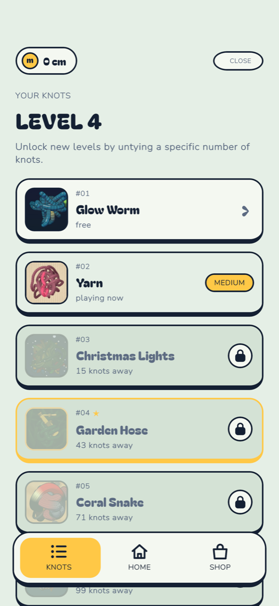
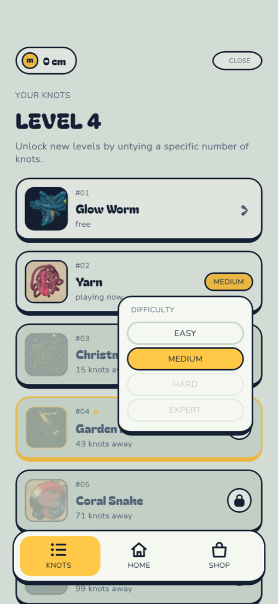
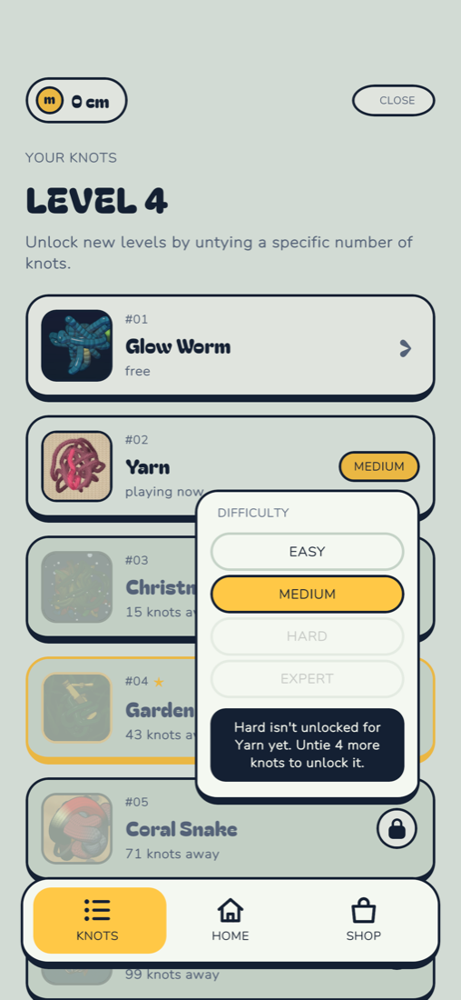
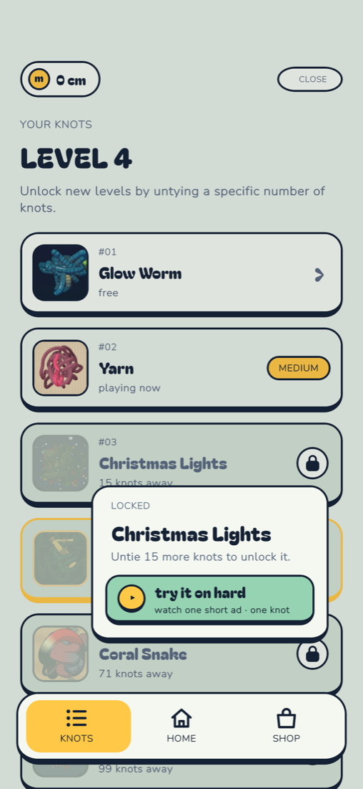
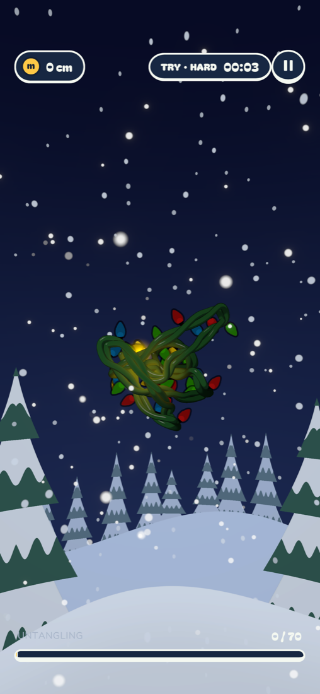
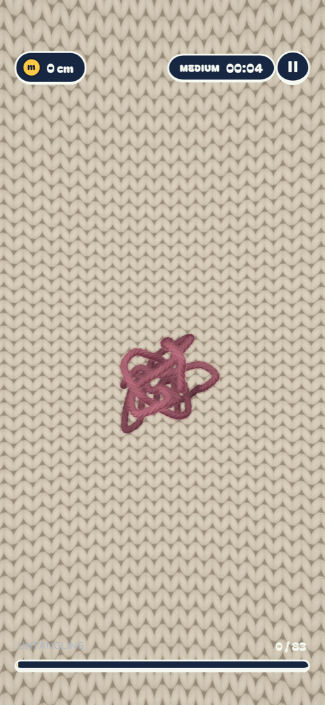
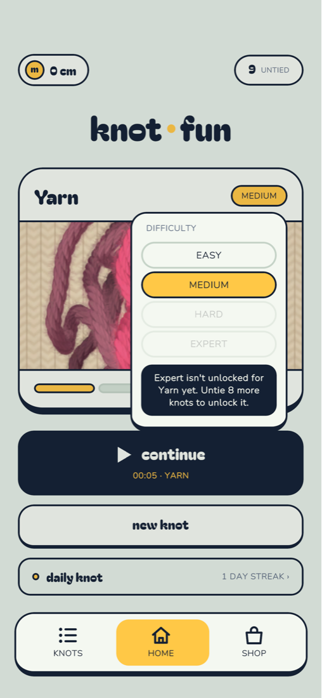

<!doctype html><meta name=viewport content="width=device-width,initial-scale=1"><title>Knot Fun screenshots</title>
<style>body{font-family:-apple-system,sans-serif;background:#E5EFE6;margin:0;padding:16px;color:#142033}figure{margin:0 0 28px}img{width:100%;max-width:420px;border-radius:16px;display:block;border:2px solid #142033}figcaption{font-weight:700;margin:0 0 8px}</style>
<figure><figcaption>1. Nav + Your Knots with explainer</figcaption></figure>
<figure><figcaption>2. Difficulty selector on Your Knots</figcaption></figure>
<figure><figcaption>3. Locked difficulty tooltip</figcaption></figure>
<figure><figcaption>4. Locked string tooltip with ad trial</figcaption></figure>
<figure><figcaption>5. Trial run (TRY · HARD)</figcaption></figure>
<figure><figcaption>6. Next knot: back to Yarn, Medium</figcaption></figure>
<figure><figcaption>7. Home difficulty selector</figcaption></figure>
